Instituições
 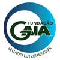
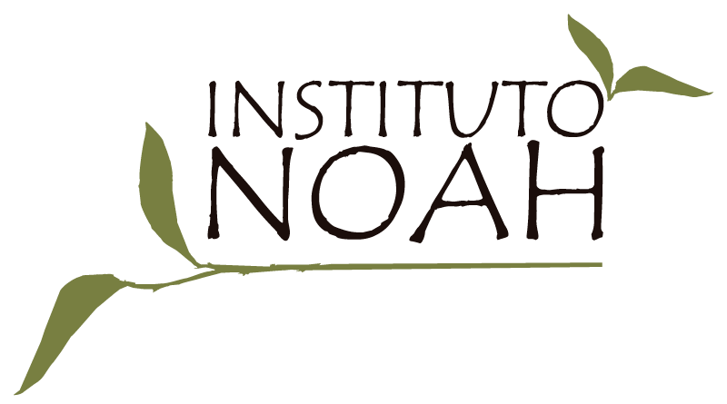
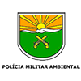
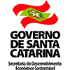
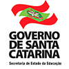
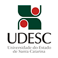
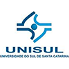
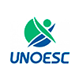
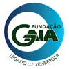
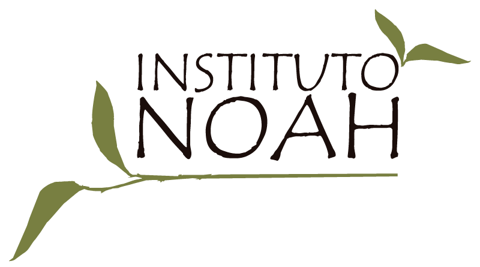
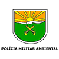
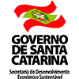
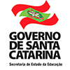
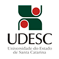
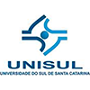
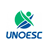
Click Sign In to close Login Screen
A Comissão Interinstitucional de Educação Ambiental do Estado de Santa Catarina (CIEA/SC), levando em conta as Recomendações da 1ª Conferência Intergovernamental sobre Educação Ambiental de Tbilisi, 1977, e em sintonia com a Política Nacional de Educação Ambiental - PNEA (Lei nº 9.795, de 27 de abril de 1999, e o Decreto nº 4.281, de 25 de junho de 2002), tem por finalidade identificar, analisar e propor ações e processos participativos na construção e acompanhamento de políticas e programas de Educação Ambiental no Estado.
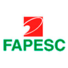
O objetivo deste portal é disponibilizar livremente material e conteúdos de projetos, estudos, atividades ou trabalhos realizados na educação ambiental em nosso estado, para livre acesso eletrônico dos estudantes, professores, pesquisadores e público em geral de qualquer nível de ensino.
O portal integra notícias, reportagens e atividades voltadas para o público catarinense principalmente ao respeito do que é realizado em Educação ambiental no estado de Santa Catarina, por escolas, associações, organizações não governamentais, entidades públicas e privadas.
Em seu caráter administrativo, o portal é mantido pela Comissão Interinstitucional de Educação Ambiental (CIEA), as instituições que a compõe; e pela Secretaria de Estado do Desenvolvimento Sustentável (SDS) do Estado de Santa Catarina.
O Portal de Educação Ambiental/SC foi desenvolvido por uma equipe interdisciplinar da Universidade do Vale do Itajaí (UNIVALI), através do projeto de número 3788/2013, modalidade demanda espontânea da Fundação de Amparo à Pesquisa e Inovação do Estado de Santa Catarina (FAPESC).
A Comissão Interinstitucional de Educação Ambiental do Estado de Santa Catarina (CIEA/SC), levando em conta as Recomendações da 1ª Conferência Intergovernamental sobre Educação Ambiental de Tbilisi, 1977, e em sintonia com a Política Nacional de Educação Ambiental - PNEA (Lei nº 9.795, de 27 de abril de 1999, e o Decreto nº 4.281, de 25 de junho de 2002), tem por finalidade identificar, analisar e propor ações e processos participativos na construção e acompanhamento de políticas e programas de Educação Ambiental no Estado.
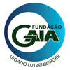
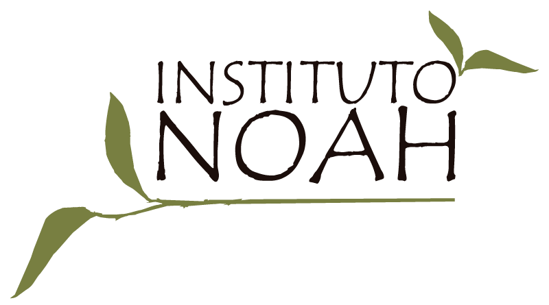
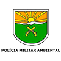
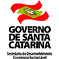
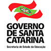
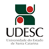
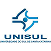
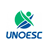
A Assembleia Legislativa do Estado de Santa Catarina criou o programa Consciência Limpa para estimular servidores, assessores, parlamentares e visitantes do Poder Legislativo a adotar práticas de proteção ao meio ambiente.
Desde 5 de junho de 2007, o lixo produzido no Palácio Barriga-Verde é reciclado, reutilizado e reduzido. São os 3 Rs da consciência ambiental, um convite à contribuição de todos para a preservação do planeta.
Durante décadas, sempre agimos com certo conforto em relação à natureza. A preocupação era só jogar o lixo nas lixeiras para não sujar os locais onde vivemos. Mas só isso não basta: hoje, a preocupação é reduzir a quantidade de resíduos jogados no planeta e encontrar soluções para reaproveitar ou produzir cada vez menos resíduos.
As empresas e as instituições públicas ou privadas devem assumir o compromisso de reduzir e eliminar seus impactos ambientais negativos, e a sociedade deve fazer a sua parte. A questão do lixo afeta todos nós e o futuro dos nossos filhos.
O Banco Regional de Desenvolvimento do Extremo Sul (BRDE) foi criado em 1961 para atuar no fomento da Região Sul. Desde o início, o Banco preocupa-se com o desenvolvimento socioambiental em todas suas ações. Esta atuação foi enfatizada em 2002, com a criação de um grupo de funcionários que se empenham para destacar essas ações através do BRDE Responsabilidade Socioambiental.
Em 2014, para reforçar seu compromisso como protagonista do empenho pelo desenvolvimento econômico e socioambiental, o BRDE assume a condição de Embaixador da campanha global 8 Objetivos do Milênio, adotando o objetivo nº 1: erradicar a fome e a miséria. Sendo assim, nas suas ações creditícias de fomento para geração de emprego e renda, o BRDE tem o compromisso de exigir dos empreendimentos o licenciamento ambiental, quando necessário.
Responsável pela defesa agropecuária do estado, a Companhia Integrada de Desenvolvimento Agrícola de Santa Catarina – Cidasc, empresa pública vinculada à Secretaria de Estado da Agricultura e da Pesca, executa ações nas áreas de Defesa Sanitária Vegetal, Defesa Sanitária Animal e Inspeção de Produtos de Origem Animal.
Alinhado aos preceitos da Lei nº 9.712, de 20 de Novembro de 1998, que define os objetivos da Defesa Agropecuária, e do Decreto nº 5.741, de 30 de Março de 2006, que regulamenta o Sistema Unificado de Atenção à Sanidade Agropecuária – SUASA, especialmente em seu artigo 39, que dispõe sobre a Educação Sanitária em Defesa Agropecuária, o Projeto Sanitarista Junior foi implantado pela Cidasc no estado em 2015.
O Projeto Sanitarista Junior, focado na defesa agropecuária, sanidade ambiental e humana, foi elaborado a partir da construção do Programa Estadual de Educação Sanitária em Defesa Agropecuária e foi desenvolvido para ser executado junto às escolas por livre demanda.
Por meio de um termo de cooperação técnica entre a Cidasc e as escolas parceiras, o projeto é conduzido ao longo de todo ano letivo, a partir da 5º ano do Ensino Fundamental, em caráter transversal e multidisciplinar.
As aulas envolvem saídas de campo, apresentação de vídeos educativos e práticas dentro do contexto da defesa agropecuária. O projeto dispõe de material próprio, abordando temas como saúde animal, sanidade vegetal, qualidade dos produtos agropecuários, uso correto de agrotóxicos, agricultura orgânica, bem-estar animal, preservação do meio-ambiente e promoção da saúde humana.
Integrando o conhecimento sistematizado e a realidade dos atores sociais envolvidos, o Projeto Sanitarista Junior torna-se instrumento que leva a um processo de sensibilização e consciência ambiental, permitindo às crianças desenvolverem valores e competências fundamentais para o pleno exercício da cidadania.
As crianças, por meio das vivências do projeto, tornam-se multiplicadoras das ações de defesa agropecuária e passam a disseminar conhecimentos que contribuirão para a melhoria da produção de alimentos seguros e a qualidade de vida no campo.
Abordar a importância da agropecuária e a prática da produção de alimentos seguros, torna-se, também, estratégia para fortalecer a relação das crianças e jovens com a sucessão familiar das propriedade rurais, minimizando assim o êxodo rural e incentivando a permanência dos jovens no campo.
Ao longo destes três anos, o Projeto Sanitarista Junior já capacitou mais de 7 mil crianças, de 90 escolas, em 42 municípios catarinenses.
A Cidasc entende a educação sanitária como uma atividade estratégica e instrumento da defesa, buscando a parceria de toda a sociedade para a manutenção de um estado de excelência em sanidade agropecuária.
A Empresa de Pesquisa Agropecuária e Extensão Rural de Santa Catarina (Epagri), tem como missão: conhecimento, tecnologia e extensão para o desenvolvimento sustentável do meio rural, em benefício da sociedade.
A Epagri atua em ações de Educação Ambiental Rural desde a década de 1950, em mais de 200 municípios de Santa Catarina envolvendo a população rural, pesqueira, indígena, escolas que recebem as crianças do meio rural e pesqueiro, escolas das aldeias indígenas, jovens rurais, técnicos e lideranças municipais. A equipe técnica, com o maior envolvimento das extensionistas, é responsável pelo desenvolvimento de ações voltadas à descontaminação do solo e à melhoria da qualidade da água junto a famílias e escolas rurais.
Também desenvolveu várias tecnologias de baixo custo para o tratamento do esgoto doméstico tanto para sistemas individuais quanto para sistemas coletivos. Em algumas comunidades rurais resultou que mais de 90% das famílias rurais trataram o esgoto doméstico em suas propriedades. Nos início dos anos 2000 a ampliação do trabalho se deu na linha das energias alternativas e bioconstruções, como implantação da energia solar a partir das placas com garrafas pet, do armazenamento de água da chuva entre outros.
O projeto Arte Educação fortalece os aspectos culturais de comunidades, jovens e escolares, com uma linguagem lúdica. Foi uma das inovações fundamentais da ação da Epagri, pois propicia o resgate das histórias de desenvolvimento das comunidades, seus saberes, sabores e cores, talentos artísticos como teatro, música, poesia, o que oportuniza o reviver de muitas brincadeiras, culinária tradicional, mitos e lendas das comunidades.
Em 2006, o Programa de Recuperação Ambiental e de Apoio ao Pequeno Produtor Rural (Prapem/MB2) e a Epagri implantaram o Prêmio Epagri/MB2 em inúmeras microbacias. Até o momento foram realizadas sete edições do prêmio. O objetivo da iniciativa era apoiar e fortalecer os esforços das escolas que recebem crianças do meio rural, consolidar a educação ambiental como um recurso capaz de tornar mais efetivo o processo participativo entre as escolas e as comunidades. Além disso, o prêmio visa contribuir com a valorização da agricultura familiar e a integração com o espaço urbano; reconhecer que a escola é um espaço fundamental para a construção da identidade sócio ambiental e do desenvolvimento da amorosidade e da solidariedade como competências pessoais e coletivas; integrar os diferentes saberes e a construção de uma visão crítica e participativa; favorecer a recuperação, preservação e proteção dos ecossistemas e das diversas culturas locais.
A União dos Escoteiros do Brasil (UEB), personalidade jurídica que representa o Escotismo no Brasil, foi fundada em 4 de novembro de 1924. Apresentada à sociedade como "Escoteiros do Brasil", é uma sociedade civil de âmbito nacional, de direito privado e sem fins lucrativos, de caráter educacional, cultural, beneficente e filantrópico.
A instituição é reconhecida de utilidade pública, que congrega os Grupos de Escoteiros no Brasil. Hoje existem cerca 84.000 escoteiros filiados à União dos Escoteiros do Brasil.
Em Santa Catarina, a entidade que representa oficialmente o Movimento Escoteiro é a União dos Escoteiros do Brasil – Região de Santa Catarina. Conforme relatos históricos, o início do Escotismo em nosso estado ocorreu em 1913.
A UEB está organizada em 3 níveis:
O Nacional, com autoridade em todo o Território brasileiro;
O Regional, denominado Região Escoteira, podendo abranger uma ou mais unidades da federação, ou parte delas, com autoridade sobre a área que lhe for fixada - normalmente compreende os Estados da Federação;
O Local, constituído pelos Grupos Escoteiros e Seções Escoteiras Autônomas, que são as organizações locais para a prática do Escotismo.
A Fapesc (Fundação de Amparo à Pesquisa e Inovação do Estado de Santa Catarina) tem por finalidade o fomento à pesquisa científica e tecnológica, para o avanço de todas as áreas do conhecimento, o equilíbrio regional, o desenvolvimento sustentável e a melhoria da qualidade de vida da população de Santa Catarina.
Para atingir esse e outros objetivos, trabalha em conjunto com diversas entidades, participando, da Comissão Interinstitucional de Educação Ambiental de Santa Catarina (CIEA/SC) junto com 22 outros órgãos, entre Instituições de Ensino Superior, órgãos do Poder Público, organizações não-governamentais e da sociedade civil, integra também o Comitê Estadual de Gestão Sustentável Florestal , criado pela Secretaria de Estado da Agricultura e da Pesca.
De forma praticamente permanente, há mais de 5 anos a Fapesc vem apoiando a realização do Inventário Florístico-Florestal de Santa Catarina, que identificou os remanescentes florestais e gerou uma base de dados sólida para a formulação de uma política florestal para o estado. Seus resultados foram divulgados por meio de 6 volumes, sendo que 5 foram publicados com recursos desta Fundação, vinculada ao Confap (Conselho Nacional das Fundações Estaduais de Amparo à Pesquisa). Recentemente uma nova vistoria em campo foi iniciada para verificar as mudanças ocorridas nos últimos anos, de modo a atualizar o levantamento florístico-florestal coordenado pela Fundação Universidade Regional de Blumenau.
Parceira da Editora da FURB para lançar a obra Biodiversidade Catarinense: Características, Potencialidades e Ameaças; sem falar no Guia Ilustrado sobre Biodiversidade Marinha e seus desdobramentos: um livro eletrônico e um videodocumentário, feitos por pesquisadores da UFSC (Universidade Federal da Santa Catarina).
Recursos públicos foram igualmente destinados à Rede Guarani/Serra Geral, voltado à produção de conhecimento compartilhado sobre gestão sustentável de águas superficiais e subterrâneas no Sul do país. Sua abrangência transcende fronteiras, abarcando os países vizinhos permeados pelo aquífero Guarani.
No âmbito estadual, o primeiro laboratório de Ecotoxicologia montado pelo governo de Santa Catarina foi reativado através de recursos financeiros da Fapesc. Isso tem permitido o monitoramento das águas da Lagoa da Conceição e outras ações da Fatma (Fundação do Meio Ambiente) para atender a todas as exigências do Conama (Conselho Nacional do Meio Ambiente.
Esses são alguns dos muitos exemplos de auxílio financeiro e institucional da Fapesc à preservação do meio ambiente e, em particular, à educação ambiental. Afinal, é preciso conhecer para melhor proteger a natureza.
Com o intuito de formar cidadãos conscientes para uma cultura de prevenção e preservação do Meio Ambiente a Instituto do Meio Ambiente - IMA desenvolve atividades de educação ambiental nas Unidades de Conservação Estaduais, sob a categoria parque, e através do Programa de Educação Ambiental Itinerante Eco-Ônibus.
Na inserção do conhecimento específico de educação ambiental à educação formal os alunos do ensino fundamental e médio das escolas da rede pública Estadual e Municipal são aplicadas metodologias e estratégias em conformidade com a serie/idade dos alunos, as quais possibilitam a compreensão do conhecimento de maneira significativa.
Vinte e dois (22) temas são trabalhados, dentre os quais podem ser destacados: fauna, flora, água, pesca, agrotóxicos, poluição, lixo, aquecimento global, queimadas, unidades de conservação, áreas de preservação permanente, mata atlântica e recuperação ambiental, porém, de acordo com a necessidade de preservação ambiental enfrentada por cada município, é dada ênfase maior nos temas a serem abordado.
A Federação dos Trabalhadores na Agricultura do Estado de Santa Catarina – Fetaesc, é uma entidade sindical, sem fins lucrativos, que representa legalmente todos os trabalhadores e trabalhadoras em regime de economia familiar no Estado de Santa Catarina. A Federação é filiada ao sistema CONTAG (Confederação Nacional de Trabalhadores na Agricultura), e congrega 200 Sindicatos filiados que atuam em todas regiões do estado, organizados em 17 Associações Microrregionais de Sindicatos de trabalhadores (as) rurais.
A entidade atua no sentido de organizar e representar agricultores e agricultoras promovendo renda, qualidade de vida e garantia de acesso aos direitos sociais básicos às famílias que vivem e trabalham no meio rural. Também defende uma produção saudável e estimula em Santa Catarina a implantação de um Projeto Alternativo de Desenvolvimento rural Sustentável. Para isso, a entidade organiza, desenvolve e apóia ações e projetos que priorizam uma agricultura de base familiar, diversa, sustentável, que melhores condições de vida e de trabalho para todos os integrantes da categoria.
Dentre suas participações e atuações, podemos destacar: Programas de capacitação; Organização e Formação Sindical; Representação da categoria nos Conselhos Estaduais e Municipais de Gestão Paritária; Organização das mulheres trabalhadoras e de Jovens do meio rural; Acesso a Políticas públicas (PAA, PNAE, PNCF); Apoio a projetos de Educação do Campo; Associativismo (Incubação, Capacitação, crédito, agroindustrialização, comercialização, agroecologia); Intercâmbios regional, nacional e internacional.
Ao longo de 46 anos de existência da FETAESC em Santa Catarina é possível destacar as seguintes conquistas:
O Fórum Catarinense de Comitês de Bacias Hidrográficas é a instância colegiada formada pelos Comitês de Bacias Hidrográficas e Pró-Comitês legalmente instituídos no território do Estado de Santa Catarina.
O Fórum Catarinense foi criado com intuito de auxiliar na formulação e articulação das políticas públicas de recursos hídricos em âmbito estadual e nacional, visando o fortalecimento dos comitês de bacias hidrográficas, legalmente instituídos e em processo de instituição, como parte do Sistema Estadual de Gerenciamento de Recursos Hídricos do Estado de Santa Catarina, de forma descentralizada, integrada e participativa.
Fazem parte do Fórum Catarinense, os comitês de bacias dos rios Araranguá, Camboriú, Canoas, Canoinhas, Chapecó e Irani, Cubatão, Cubatão e Cachoeira, das Antas, do Peixe, Itajaí, Itapocu, Jacutinga, Tijucas, Timbó, Tubarão e Urussanga.
A Coordenação do Fórum Catarinense é realizada por um colegiado coordenador composto de sete comitês de bacias hidrográficas, eleitos pela Plenária do referido Fórum. O Colegiado tem um coordenador geral e um coordenador adjunto, indicados pelos seus sete membros.
O atual coordenador do Fórum é o Comitê da bacia do rio do Peixe, representado por Ricardo Marcelo de Menezes e o coordenador adjunto é o Comitê da bacia do rio Canoas, representado por João Maria Telles Souza. As representantes do Fórum Catarinense junto ao CIESC são Rose Maria Adami e Patrice Barzan.
As atividades de educação ambiental desenvolvidas pelos comitês de bacias hidrográficas de Santa Catarina são voltadas para recursos hídricos. Essas atividades envolvem capacitações dos membros dos Comitês, professores, alunos, gestores públicos, técnicos e profissionais ligados aos setores usuários e sociedade civil, por meio de palestras, oficinas e cursos de curta duração; visitas técnicas aos gestores públicos, lideranças municipais, órgãos da imprensa das bacias hidrográficas; concursos fotográficos; materiais educativos, como folders, banners, cartilhas, cadernos e vídeos educativos; semanas de meio ambiente; exposições de fotos e fóruns. Essas atividades têm como objetivos buscar aproximação com os gestores públicos e lideranças municipais, levar informação sobre as atividades desenvolvidas nos Comitês e buscar apoio e parceria na gestão de recursos hídricos das bacias hidrográficas.
A Fundação Gaia (www.fgaia.org.br) foi fundada em 1987 pelo ambientalista José Lutzenberger. Busca desenvolver e aplicar soluções ecologicamente desejáveis e socialmente justas, visando à preservação planetária em sua diversidade de ambientes e espécies. É referência em práticas sustentáveis para a consolidação de uma ética e cultura de integração harmônica homem-natureza, como pregava Lutzenberger.
Em Santa Catarina, no município de Garopaba, atua através do Projeto Gaia Village, que oportuniza à comunidade local e aos representantes dos diversos órgãos públicos a problematização e vivência dos princípios da sustentabilidade, através de cursos, seminários, estágios, visitas demonstrativas, capacitações e especialmente, através do Programa de Educação Ambiental Mostra Prof. José Lutzenberger (www.gaianarede.blogspot.com), que acontece em parceria com a Prefeitura Municipal de Garopaba. Nascido em 2001, o Programa abarca 100% da Rede de Ensino do Município. Incorporado ao calendário educacional é difundido como politica publica de Garopaba, com aestratégia de promover e orientar projetos de caráter ambiental na comunidade escolar que é estimulada a pensar as realidades, os recursos disponíveis, os problemas existentes, e buscar soluções que estejam mais relacionadas com o complexo sistema em que vivemos.
A Fundação Gaia tem participação ativa em coletivos, tais como o Conselho Gestor da APA da Baleia Franca / ICMBio; Comissão Interinstitucional de Educação Ambiental da Secretaria de Desenvolvimento Sustentável Econômico de SC (CIEA/SDS); Conselho Municipal de Meio Ambiente / COMDEMA; Conselho Municipal de Educação/ CME; Conselho de Desenvolvimento Municipal/ CDM e Conselho Municipal dos Direitos da Criança e do Adolescente /CMDCA.
A FURB é feita de pessoas. Cada uma delas - com a sua característica - acreditou e fez do sonho uma realidade que hoje encanta pela grandiosidade. Um universo de conhecimento que extrapola os limites das salas de aula e laboratórios e interfere diretamente em muitos lares, empresas e cidades.
É a primeira faculdade do interior do estado de Santa Catarina e foi criada em 1964, como fruto de um movimento comunitário, para tornar mais abrangente o acesso ao ensino superior. Objetivo que a Universidade Regional de Blumenau continua realizando ao longo da sua história e alcançado por mais de 40 mil profissionais graduados pela FURB.
Em 13 de fevereiro de 1986, pela Portaria Ministerial nº 117, o Ensino Superior, mantido pela FURB, é reconhecido e credenciado pelo Ministério da Educação como Universidade.
A partir de março de 1995, pela Lei Complementar Municipal nº 80, a Universidade Regional de Blumenau figura como Instituição de Ensino Superior criada e mantida pela Fundação Universidade Regional de Blumenau - FURB, incluída como órgão autônomo na estrutura administrativa do Poder Executivo Municipal, uma instituição oficial de direito público.
Desde 19 de março de 2010, por meio da Lei Complementar Municipal nº 743, a FURB é uma autarquia municipal de regime especial, possuindo plena autonomia didático-científica, administrativa e de gestão financeira e patrimonial, conforme disciplina seu Estatuto, nos termos do art. 207 da Constituição Federal.
O Instituto Ambientes em Rede (IAR) é uma Organização Não Governamental sem fins econômicos, qualificada como OSCIP, fundada em Florianópolis/SC e que atua há mais de 14 anos desenvolvendo e promovendo ações de gestão ambiental assim como executando projetos sócio ambientais e culturais em todo o território brasileiro.
Em seu quadro de colaboradores e voluntários conta com profissionais de diversas áreas como agrônomos, biólogos, geógrafos, educadores, engenheiros, turismólogos, advogados, entre outros.
Tem em seu currículo projetos como “Por Dentro da Natureza”, “Praia Limpa”, “Mãos na Mata”, “Rede de Sementes Brasileiras”, “Programa Bandeira Azul”, “Bateria Mirim”, “Guardiões das Praias”, entre outros.
Em 2004 o IAR associou-se à FEE (Foundation for Environmental Education) , instituição internacional que conta com a participação de mais de 60 países e atua com diversos programas ambientais em todo o mundo como “Programa Bandeira Azul”, “Programa Eco-Escolas”, “Chave Verde”, “Aprendendo sobre Florestas”, “Jovens Repórters”. O IAR é o Operador Nacional dos programas da FEE no Brasil.
A missão do IF-SC é desenvolver e difundir conhecimento científico e tecnológico, formando indivíduos capacitados para o exercício da cidadania e da profissão e tem como visão de futuro consolidar-se como centro de excelência na educação profissional e tecnológica no Estado de Santa Catarina.
A finalidade do IF-SC é formar e qualificar profissionais no âmbito da educação profissional e tecnológica, nos diferentes níveis e modalidades de ensino, para os diversos setores da economia, bem como realizar pesquisa aplicada e promover o desenvolvimento tecnológico de novos processos, produtos e serviços, em estreita articulação com os setores produtivos e a sociedade, especialmente de abrangência local e regional, oferecendo mecanismos para a educação continuada.
O Instituto Noah (IN) é uma associação civil sem fins econômicos, qualificada como Organização da Sociedade Civil de Interesse Público - OSCIP, fundada em 2008, de caráter socioambiental, com sede no município de Florianópolis e que possui titularidade pública Municipal e Estadual.
O IN é o órgão gestor do Centro de Educação e Cidadania Ambiental (CECA), localizado em Florianópolis, Santa Catarina. Por meio do CECA – espaço que busca inspirar ações de cidadania ambiental e despertar uma consciência sobre a conservação do nosso patrimônio natural – o IN vem desenvolvendo ações de educação ambiental desde novembro de 2010 e já alcançou cerca de 40.000 pessoas.
O IN/CECA tem como tema principal em seus programas de educação ambiental a ÁGUA (oceanos, mares, rios e mananciais), tanto pela importância do bem essencial à vida na Terra, quanto por estar localizado ao lado de uma Unidade de Conservação Federal que tem a água como seu principal regulador ambiental.
O IN é o proponente do projeto Museu Estação do Mar e, atualmente, recebe no CECA as instalações deste museu, que será totalmente voltado para as espécies marinhas e costeiras que ocorrem na Costa Sul do Brasil e que estão ameaçadas de extinção. Este projeto está sendo concebido e realizado pela parceria profícua entre o Instituto Noah, o Instituto Cultural Soto e o Floripa Shopping.
O Batalhão de Polícia Militar Ambiental Dr. Fritz Müller (BPMA), é uma unidade especializada que pertence à Polícia Militar de Santa Catarina, tem atuação em todos os municípios do Estado, contando com 20 unidades físicas, e efetivo ativo de 355 Policiais.
O BPMA desenvolve trabalhos preventivos (programas de educação ambiental) e repressivos (sanções administrativas nas questões ambientais, combatendo as infrações e crimes contra à natureza).
No que tange a prevenção, o BPMA detém programa específico para jovens, (Programa Protetor Ambiental), e além disso realiza educação ambiental através de eventos e palestras para a comunidade em geral.
Os Policiais Militares Ambientais que se encontram lotados no referido batalhão têm treinamento específico para as questões de prevenção, proteção e fiscalização no que tange ao meio ambiente.
A REASul é uma rede social resultante da articulação coletiva de pessoas e instituições com objetivos compartilhados que conectam presencial e virtualmente educadores (as), pesquisadores (as), gestores de políticas públicas, técnicos e participantes de ONGs, OSCIPs e movimentos sociais.
A Rede Sul Brasileira de Educação Ambiental (REASul) foi formada em 2002 por pesquisadores de duas universidades (UNIVALI e FURG), ambientalistas de uma ONG (Mater Natura) e gestores de políticas públicas do IBAMA.
A rede atua nos Estados de Paraná, Santa Catarina e Rio Grande do Sul, para fortalecer a comunicação entre educadores, educadoras e outros profissionais envolvidos com o compromisso da inserção da dimensão socioambiental nas práticas educativas e sociais e a difusão dos objetivos e princípios da educação ambiental, contidos em documentos como o Tratado de Educação Ambiental para Sociedades Sustentáveis e Responsabilidade Global (FÓRUM DAS ONGS, 1992); a Carta da Terra; na Lei 9795/99, Programa Nacional de Educação Ambiental (ProNEA), e na Resolução que cria as Diretrizes Curriculares Nacionais para Educação Ambiental – DCNEA (BRASIL, CNE-MEC, 2012).
A REASul, como um dos elos da REBEA - Rede Brasileira de EA (www.rebea.org.br) busca também a formação, ampliação e fortalecimento de instituições-elo e de redes estaduais e redes temáticas, nos estados do Paraná, Santa Catarina e Rio Grande do Sul.
A Comissão de Gestão Participativa (CGP) e a Secretaria Executiva da REASul fazem a gestão compartilhada da Rede, formada por pesquisadores (as) de 14 Instituições de Educação Superior (IES),14 organizações que representam as instituições públicas e OSCIPs, gestores da educação pública e de meio ambiente e 1 Coletivo Jovem pelo Meio Ambiente.
Desde 2010 as universidades-elo da REASul participam da Alianza de Redes Iberoamericanas por la Sustentabilidad y el Ambiente - ARIUSA (www.ariusa.net) e a partir de 2012 da Alianza Mundial de Universidades sobre Ambiente y Sostenibilidad - GUPES Latinoamerica e da Red de Indicadores de Sostenibilidad en las Universidades de ARIUSA - Red RISU.
A Secretaria do Desenvolvimento Econômico Sustentável (SDS), do Governo do Estado de Santa Catarina, centraliza em um mesmo órgão atividades ligadas à sustentabilidade, inovação e ao desenvolvimento econômico, configuração única no país. Sua meta é implantar um modelo de desenvolvimento econômico, ambiental e social, que garanta qualidade de vida para todos os catarinenses.
Visando conciliar o crescimento econômico com a preservação do meio ambiente, por meio de uma agenda ambiental estratégica, a SDS promove projetos para a proteção da biodiversidade e dos recursos naturais do território catarinense, ação pontuada na educação ambiental.
Por isso, a SDS se coloca à disposição, valorizando o trabalho de profissionais que atuam em diferentes temáticas na área ambiental e apoiando eventos voltados à discussão das práticas sobre o tema. Isso pode ser observado, ainda, com o apoio na criação deste portal de Educação Ambiental.
Entre as ações, destaca-se o Encontro Catarinense de Educação Ambiental, realizado em parceria com a Comissão Interinstitucional de Educação Ambiental – CIEA/SC, cujo objetivo é promover a troca de experiências entre os segmentos da sociedade e identificar o que vem sendo desenvolvido a partir do Programa Estadual de Educação Ambiental (ProEEA/SC). O ProEEA/SC foi uma conquista das instituições que fazem parte da CIEA/SC, com o apoio da SDS, que potencializou a função da educação para as ações voltadas à proteção, recuperação e melhoria socioambiental, inserindo a educação ambiental no planejamento estratégico do Governo de Santa Catarina.
O objetivo da SDS é alcançar excelência como o Estado com maior número de profissionais capacitados para atuar como multiplicadores da consciência ambiental que leve realmente para o desenvolvimento sustentável, garantindo eficácia nos projetos e economia dos recursos naturais, tendo como meta a integração dos diversos atores envolvidos nesta mudança de paradigma. Para isso, a SDS conta com o Fundo Especial de Proteção ao Meio Ambiente de Santa Catarina (FEPEMA), que libera recursos anualmente para projetos voltados, principalmente, para a educação ambiental.
A Secretaria de Estado da Educação/SED é o órgão responsável pela administração e orientação do ensino público no Estado, compartilhando esta responsabilidade com o Conselho Estadual de Educação, na forma da legislação em vigor. De acordo com a Lei Complementar nº 381, de 07 de maio de 2007, Seção V, Artigo 68, parágrafo I, cabe à instituição formular políticas da Educação Básica, Profissional e Superior em Santa Catarina, observadas as normas regulamentares do Conselho Estadual de Educação.
Dentre as muitas responsabilidades e ações, encontra-se a educação ambiental formal no contexto da Educação Básica, que possibilita novos rumos ao meio ambiente, com responsabilidade socioambiental, seja em termos de sala de aula e/ou em atividades extracurriculares. A SED orienta para que as práticas pedagógicas sejam articuladas e planejadas a partir do PPP e do currículo, e que tenham fundamentação nos seguintes documentos: Proposta Curricular Estadual, Programa Nacional de Educação Ambiental, Política Nacional de Educação Ambiental, Diretrizes Curriculares Nacionais para a Educação Básica, Política Estadual de Educação Ambiental, Programa Estadual de Educação Ambiental – ProEEA/SC, e Diretrizes Curriculares Nacionais para a Educação Ambiental, entre outros documentos norteadores.
No sentido de promover essas demandas, a Secretaria de Estado da Educação – SED, amplia o pensamento da educação ambiental para as múltiplas possibilidades pedagógicas, que repensam a segurança alimentar e nutricional, o espaço educador sustentável nas escolas e comunidades, e o reconhecimento e valorização da diversidade na escola em todos os níveis e modalidades de ensino, aproximando-os e estabelecendo conexões entre todos e cada um deles.
Historicamente, por meio do Núcleo de Educação Ambiental – NEA, a SED estuda, discute, propõe e implementa políticas ambientais. Também formula ações por intermédio da Com-vidas (Comissão de Meio Ambiente e Qualidade de Vida na Escola) e Agenda 21 nas escolas, bem como realiza a formação continuada de professores e gestores. Tais documentos e ações reforçam os compromissos da SED com a Educação Ambiental, tanto no fazer pedagógico quanto nas questões ambientais para a realidade do agora, para que a escola emane os valores, atitudes e princípios fundamentais para a construção de sociedades sustentáveis e da cultura da paz.
A Universidade Federal de Santa Catarina, ao longo de sua história, tem possibilitado que inúmeras ações de Educação Ambiental (EA) tenham acontecido, através do ensino, pesquisa ou extensão, visando a educação formal ou não-formal. O trabalho é realizado, por exemplo, na educação infantil com as diversas ações do Projeto de Educação Ambiental do Núcleo de Educação Infantil (NDI), bem como em atividades outras de extensão. Já no Colégio de Aplicação (CA), onde inúmeras iniciativas de educação ambiental acontecem, são muitos os desdobramentos que o Coletivo Lixo Zero tem realizado em parceria com outras iniciativas do CA. Na graduação, diferentes cursos têm optado por esta temática para alicerçar, nortear ou complementar suas ações. Já na pós-graduação a Educação Ambiental está presente em todos os níveis, seja como protagonista ou como coadjuvante. No âmbito da Coordenadoria de Gestão Ambiental, o Programa UFSC Sustentável vem apoiando os diversos espaços educadores da universidade e implementando diferentes ações de Educação Ambiental, inclusive através de cursos de capacitação para toda a sua equipe de servidores.
A União dos Dirigentes Municipais de Educação de Santa Catarina – UNDIME/SC, há mais de vinte anos reúne os responsáveis pelos órgãos municipais de educação, com o objetivo principal de defender os interesses e a qualidade da educação municipal.
O papel da Undime/SC é fortalecer as administrações e dirigentes municipais na área da Educação para garantir expansão e melhoria da qualidade do ensino na Escola Pública Municipal.
A ela cabe resgatar e assegurar o Ensino Fundamental, contribuir na reformulação de políticas educacionais em nível nacional, estadual e municipal, participando de instâncias decisórias e representar os interesses da Educação Pública Municipal junto às autoridades constituídas.
A Universidade do Sul de Santa Catarina-UNISUL, instituição-elo da REASUL, com assento representativo na Comissão Interinstitucional de Educação Ambiental - CIEA, desenvolve atividades de pesquisa em Educação Ambiental por meio do Grupo de Pesquisa Análise e Planejamento Ambiental da Paisagem e Educação Ambiental, AnPAP-EA, vinculado ao Programa de Pós-Graduação em Educação - PPGE-UNISUL. Os pesquisadores desse grupo realizam, dentre outros, estudos com foco na Educação Ambiental formal e investigações de caráter teórico-epistemológico na área.
A Universidade do Vale do Itajaí (UNIVALI) tem como objetivo de intervenção sócio-educacional o litoral centro-norte catarinense, o qual possui grande demanda de planejamento, gestão, conservação e educação ambiental (EA) compromissadas com a construção de sociedades sustentáveis.
Dentro deste cenário destaca-se a importância da responsabilidade social e ambiental da Universidade, tanto no desenvolvimento de saber acadêmico, quanto nas ações de extensão e suporte técnico para inserção da EA nos diversos níveis de ensino e esferas da sociedade.
No atual planejamento estratégico, há busca da sustentabilidade (em todas as suas dimensões) e a educação ambiental como uma das suas diretrizes prioritárias para os próximos anos. Desde 2001, a UNIVALI integra a Rede Universitária de Programas de Educação Ambiental para Sustentabilidade assim como as Redes Sul Brasileira de Educação Ambiental, entre outras.
Desde 1997 o Laboratório de Educação Ambiental (LEA) do Centro de Ciências Tecnológicas da Terra e do Mar (CTTMar) da UNIVALI vem atuando em áreas costeiras e marinhas, dentro dos cursos de formação na área ambiental e tem colaborado com os programas de pós-graduação, extensão e pesquisa de acordo com as demandas específicas de cada área e setor da UNIVALI em especial pela “Sala Verde” intitulada “Observatório de Educação, Saúde, Cidadania e Justiça Socioambiental – Vale do Itajaí, SC. Também existem no Mestrado de Educação, linhas de pesquisa em EA e dentro do curso de Direito o Projeto de Extensão Sustenta Habilidade. Nos campus também vem sendo instaurados jardins comestíveis pelo departamento de engenharia.
A Universidade do Oeste de Santa Catarina é mantida pela Fundação Universidade do Oeste de Santa Catarina – Funoesc, com sede na cidade de Joaçaba – SC, criada pelo poder público municipal, de direito privado, filantrópica e sem fins lucrativos. Foi reconhecida como Universidade pelo Conselho Estadual de Educação, em 1995, por meio do Parecer nº 263. Foi credenciada pelo Ministério da Educação e decretada como Universidade pelo Presidente da República, em 14 de agosto de 1996.
A Instituição pauta-se por um modelo de gestão que tem como base a colegialidade de decisão, um modelo apropriado à sua natureza jurídica e comunitária. Seu modelo organizacional é adequado à sua condição de universidade multicampi, com características próprias e específicas.
Vale ressaltar que a IES alicerça-se em cinco características: a) a origem pública, considerados os atos instituidores baixados pelo poder público, assim como o caráter público de seu processo de criação, reconhecimento e credenciamento como Universidade; b) a forma jurídica de operar, na condição de instituição não estatal, mantida pela junção de esforços entre comunidade interna, poder público e comunidade externa; c) a dimensão comunitária, considerando a função social que desempenha na comunidade regional; d) a regionalidade de atuação, considerando a sua área geográfica de inserção e a sua organização estrutural presente nas principais cidades da região; e) e o comprometimento com o desenvolvimento regional.
A missão desta instituição pauta-se em “formar pessoas, produzir conhecimento e oferecer extensão e serviços, promovendoo desenvolvimento institucional e regional”. O papel educativo de formar pessoas está em correspondência com as exigências do mundo contemporâneo e com a realidade loco regional. Por isso, a formação tem uma amplitude maior que a da mera profissionalização: é entendida como processo sociocultural, científico, integral e continuado.
A Unoesc atua na Mesorregião Oeste catarinense e, em parte, na Mesorregião Serrana, junto aos municípios da Amplasc - Associação dos Municípios do Planalto Sul de Santa Catarina. Ao todo, são 125 municípios, ocupando uma área territorial de 27.255,5 km², somando 1.256.921 habitantes, conforme Censo Demográfico de 2010. O mapa de Santa Catarina, a seguir, registra o Meio Oeste, oeste e extremo oeste, regiões em que se encontram os Campi-sede, Campi Aproximados e Unidades da Instituição.
Sorry
Requested content not found.